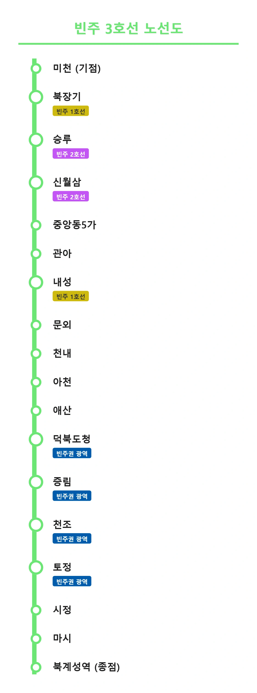

빈주 도시철도 3호선
|
|||
|
 빈주 도시철도 3호선 노선도 (예정)
|
|||
| 노선 정보 | |||
|---|---|---|---|
| 노선 색상 | ■ 연두색 (Light Green) | ||
| 운영 기관 | 빈주도시철도공사 (예정) | ||
| 개통일 | 2036년 (예정) | ||
| 기점 | 미천역 | ||
| 종점 | 북계성역 | ||
| 차량 시스템 | 트램트레인 (노면전차 + 고가철도) | ||
| 차량기지 | 마시차량사업소 (예정) | ||
1. 개요
"빈주시와 계성시를 잇는 연두빛 야심작"
"차량기지 짬처리를 둘러싼 지자체 간의 환장할 기싸움"
기존 1, 2호선 노선의 대대적인 연장과 더불어 폭풍처럼 무섭게 추진되고 있는 빈주 도시철도의 3번째 노선. 노선이 늘어날수록 빈주 1호선의 박빛나와 빈주 2호선의 김소빈이의 다크서클도 지하 암반수까지 무한 연장 중이라는 슬픈 전설이 있다(...) 살려줘
빈주시 장기구 미천역에서 출발해 덕북도청, 천조읍이라는 굵직한 수요처를 거쳐 인접한 계성시 북계성역까지 뻗어나가는 대규모 신설 노선이다. 테마 색상은 연두색(#6AE673)이다. 단순히 빈주시 내부를 도는 것을 넘어, 인접한 지자체인 계성시 깊숙한 곳까지 노선을 시원하게 뚫어버리는 빈주도시철도공사의 거대한 야심작으로 평가받고 있다.
2. 상세
2.1. 기묘한 트램트레인과 계성시의 분노(?)
빈주 3호선은 막대한 건설비를 아끼고 B/C값을 끌어올리기 위해 지하철 대신 트램트레인(Tram-Train) 시스템이라는 과감한 기행을 선보인다. 부지가 넓어 여유로운 외곽이나 신도시 구간에서는 건설비가 싼 지상 1층 노면전차(트램) 모드로 도로 위를 느긋하게 달리다가, 도로가 좁아터지고 혼잡한 구도심 헬게이트 구간에 들어서면 그대로 지상 2층 고가철도로 솟아올라 입체 교차하는 미친 하이브리드 방식을 추진 중이다.
롤러코스터 타이쿤이냐 시장님의 피나는 예산 절감과 표정속도 향상이라는 두 마리 토끼를 다 잡으려는 맹렬한 야욕의 산물이라 할 수 있다.
한편, 빈주 3호선이 굳이 노선을 길게 빼서 인접한 계성시 변두리(마시동)를 밟는 진짜 이유는 따로 있다. 바로 차량기지를 지을 넓은 땅이 빽빽한 빈주시에 없어서, 만만한 계성시 외곽으로 밀어넣기 위한 일종의 짬처리(...) 성격이 매우 강하다는 것. 전형적인 님비(NIMBY)와 핌피(PIMFY)가 충돌하는 현장이다.
사실 계성시에는 이미 코레일의 빈주권 광역전철망이 절찬리에 운행 중이라 굳이 3호선이 찔끔 들어오는 게 아쉬울 게 없는 입장이었다. 하지만 철도망의 혜택은 쥐꼬리만큼 보면서 거대한 혐오시설인 차량기지를 억지로 떠안게 된 계성시민들은 당연히 폭발했다.
🛡️ 빈주시청: "아니 남의 동네에 외곽이라도 우리 돈 들여서 전철 놔주는 게 어딘데... 더 이상 연장할 예산 없습니다 돌아가세요." (예산 핑계로 철벽 방어)
이처럼 빈주시가 예산 문제를 들먹이며 철벽을 치고 있어 매일같이 양 지자체 간의 피 말리는 줄다리기가 이어지는 중이다.[1]상급 기관인 덕북도청까지 중재에 나섰으나 양측의 팽팽한 기싸움 탓에 전혀 진전이 없이 난항을 겪고 있다.
3. 역 목록

| 역번호 | 거리(㎞) | 역명 (한자) | 승강장 / 횡단 | 환승 | 소재지 |
|---|---|---|---|---|---|
| v301 | 0.0 | 미천 (美川) | ■││■ (지상1층) / ○ | - | 빈주시 장기구 미천동 |
| v302 | 1.2 | 북장기 (長崎) | ■││■ (지상1층) / × |

|
빈주시 장기구 장기동 |
| v303 | 2.4 | 승루 (承累) | ■││■ (지상1층) / ○ |

|
빈주시 장기구 승루동 |
| v304 | 3.4 | 신월삼 (新月森) | ■││■ (지상1층) / ○ |
|
빈주시 장기구 월삼동 |
| v305 | 4.6 | 중앙동5가 (中央洞5街) | ■││■ (지상2층) / △ | - | 빈주시 빈성구 중앙동5가 |
| v306 | 5.9 | 관아 (官衙) | ■││■ (지상2층) / ○ | - | 빈주시 빈성구 관동1가 |
| v307 | 7.2 | 내성 (內城) | ■││■ (지상2층) / △ |
|
빈주시 빈성구 내성동3가 |
| v308 | 8.6 | 문외 (門外) | ■││■ (지상2층) / △ | - | 빈주시 빈성구 문외동 |
| v309 | 10.0 | 천내 (天內) | ■││■ (지상2층) / ○ | - | 빈주시 가원구 천내동 |
| v310 | 11.2 | 아천 (阿川) | ■││■ (지상2층) / △ | - | 빈주시 가원구 아천동 |
| v311 | 12.0 | 애산 (愛山) | ■││■ (지상2층) / △ | - | 빈주시 가원구 애산리 |
| v312 | 13.9 | 덕북도청 (德北道廳) | ■││■ (지상2층) / ○ |

|
빈주시 가원구 증림리 |
| v313 | 15.6 | 증림 (證林) | ■││■ (지상2층) / ○ |
|
빈주시 가원구 증림리 |
| v314 | 17.6 | 천조 (千早) | ■││■ (지상2층) / △ |
|
빈주시 가원구 천조리 |
| v315 | 22.7 | 토정 (土亭) | ■││■ (지상1층) / ○ |
|
반양군 토정리 |
| v316 | 29.1 | 시정 (試正) | ■││■ (지상1층) / ○ | - | 계성시 시정동 |
| v317 | 32.1 | 마시 (麻豕) | ■││■ (지상1층) / ○ | - | 계성시 마시동 |
| v318 | 35.8 | 북계성역 (北桂城驛) | ■││■ (지상1층) / ○ | - | 계성시 마시동 |
4. 특징 및 여담
4.1. 마스코트 (3호선 전담: 미공개/예정)
현재 맹렬하게 추진 중인 3호선의 테마 컬러가 연두색(#6AE673)으로 확정되었는데, 놀랍게도 이 컬러 코드가 러브라이브!의 스쿨 아이돌 캐릭터 코이즈미 하나요의 공식 이미지 컬러와 16진수 단위까지 기가 막히게 완벽하게 일치한다! 시장님 책상 밑에 숨겨둔 굿즈 압수수색 시급
이 어이없을 정도의 우연이 철덕과 서브컬처 팬덤(...)들 사이에서 매의 눈으로 발굴되면서, "빈주도시철도 홍보팀 내부에 중증 러브라이버가 암약하고 있다"는 썰이 사실상 기정사실이자 공식 설정으로 단단히 굳어졌다.
대중교통 팬들과 씹덕들은 3호선 개통 시 빈주 1호선의 빛나(하나마루 모티브), 2호선의 소빈(노조미 모티브)에 이어 흰 쌀밥을 광적으로 좋아하고 거대한 밥솥을 들고 다니는 소심한 단발 안경 소녀 캐릭터가 3호선 마스코트로 무조건 튀어나올 것이라 확신하며, 벌써부터 역내 방송으로 "누군가 도와줘!(다레카 타스케테!)"가 울려 퍼질 날을 고대하고 있다.
5. 보유 차량
-
■ 3000호대 전동차 (V3000, 예정): 3호선에서 운행될 예정인 최첨단 하이브리드 트램트레인 차량이다. 지상 1층 노면의 복잡한 도로 위를 버스와 나란히 유유히 지나가다가, 도심 헬게이트 구역에 진입하면 갑자기 롤러코스터마냥 굉음을 내며 지상 2층 고가철도를 향해 자유자재로 솟아오르는 기염을 토할 예정이다.
입석 승객들은 멀미약 지참 필수
6. 각주
- [1] 상급 기관인 덕북도청까지 급하게 중재에 나섰으나 양측의 팽팽한 님비/핌피 기싸움 탓에 전혀 진전이 없이 난항을 겪고 있다.